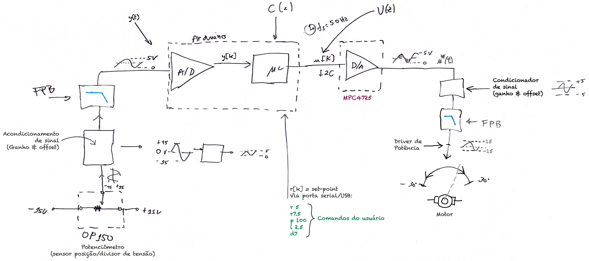
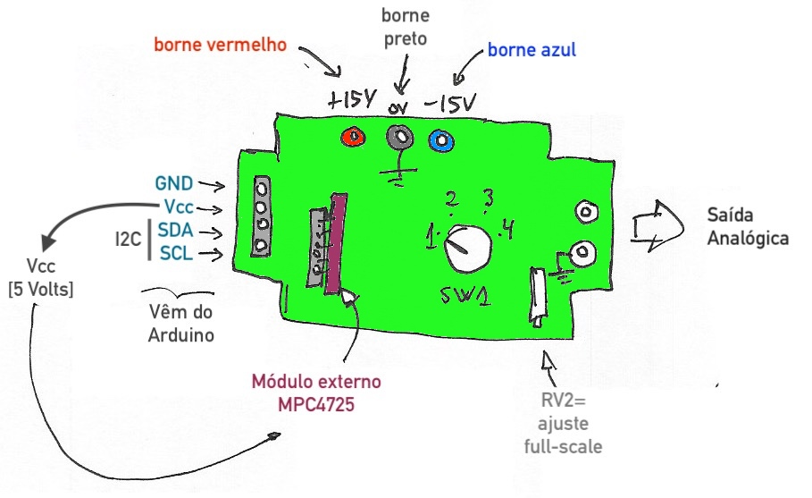
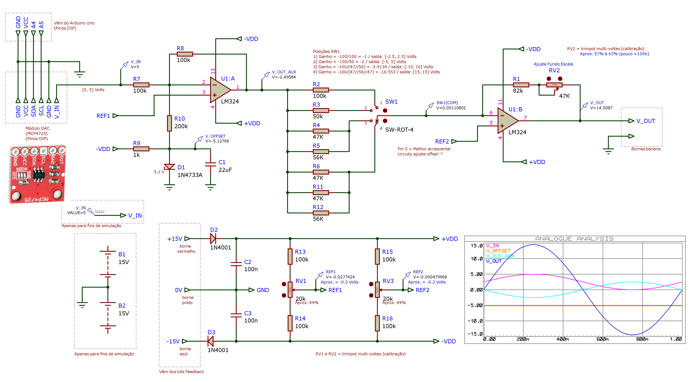
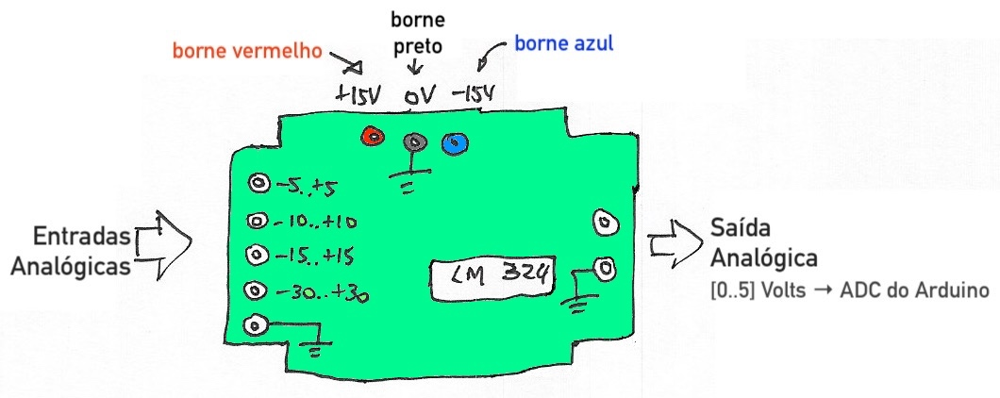
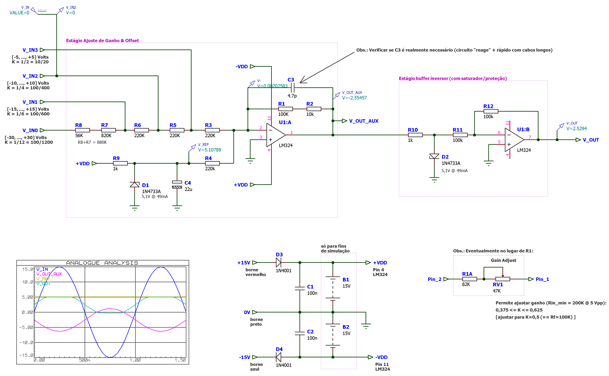
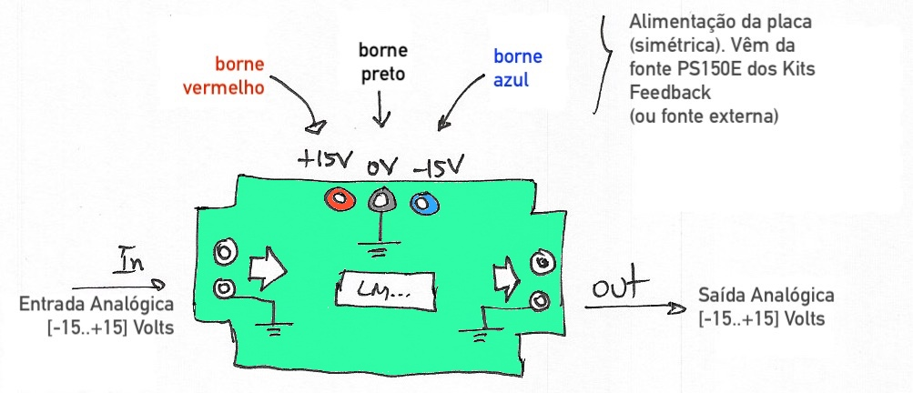
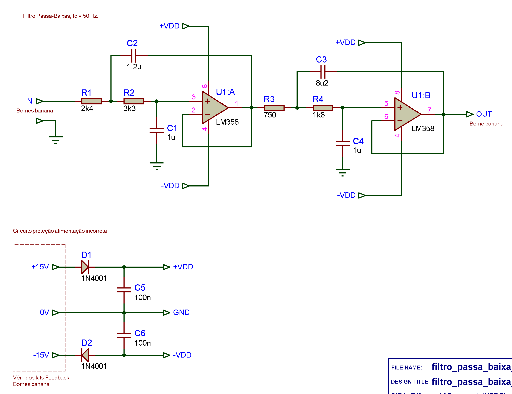

Setup para uso de PID em Arduino Uno
Para as aulas de controle digital usando kits Feedback ainda presentes no Laboratório de Controle do Curso de Engenharia Elétrica da UPF, foram desenvolvidas algumas placas extras para possibilitar a ligação de uma placa Arduino Uno à estes kits.
A figura abaixo mostra a montagem de uma malha-fechada de controle de posição angular usando kits da marca inglesa Feedback com PID analógico:

Na figura anterior, na parte inferior central está ressaltando o PID analógico. O diagrama de blocos equivalente ao sistema acima aparece abaixo:

Mas para as aulas práticas de controle digital, a idéia é executar uma versão digital do PID.
Para tanto, os seguintes componentes são necessários:
- Placa Arduino Uno comum;
- Módulo DAC/I2C MPC4725 - para saber como usar/instalar, clique [aqui];
- Filtros Passa-Baixa com frequência de corte em 50 Hz, para prever efeitos de aliasing;
- Placa acondicionadora de sinais para o A/D do Arduíno;
- Placa acondicionado do sinal de saída do DAC incorporado ao Arduino.
Um primeiro teste do algoritmo de controle digital de um PID usando Arduíno Uno pode ser visto [aqui].
O PID Digital (e seus módulos externos) devem ter seu A/D (entrada) conectado na saída 3 do PO150K (sensor de posição) e a sua saída (D/A) no pino 1 do PA150C (pré-amplificador que se comunica com driver de potência) no diagrama de blocos mostrado anteriormente, resultado num conjunto do tipo:

Segue breve descrição de cada bloco.
Módulo DAC MPC4725
Uma placa Arduino Uno (ou mesmo Raspberry Pi) não contempla um conversor D/A (de sinal digital para analógico).
Para resolver este problema, está previsto o uso de pequenos módulos DAC, baseados no chip MPC4725.

Trata-se um conversor A/D de 12-bits (trabalha com números de entrada, inteiros sem sinal, na faixa de [0 .. 4095]). Este pequeno módulo se comunica com o Arduino usando protocolo digital I2C, através dos pinos: A4 (sinal SDA) e A5 (sinal SCL). E então é capaz de gerar um sinal de saída analógico variando de 0 à 5 Volts no máximo.
Ver Trabalhar com o Módulo DAC para obter mais informações e detalhes sobre como instalar/fazer este módulo funcionar com a interface de programação tradicional das placas Arduino Uno.
Este módulo está previsto para ser encaixado na placa "condicionara de sinai de saída do DAC".
Placa de Condicionamento de Sinal para o DAC
Um DAC normalmente só gera tensão na mesma faixa do circuito digital com o qual opera. No caso, no intervalo entre [0 .. 5] Volts. Mas para sua aplicação num sistema real, se faz necessário "amplificar" e "isolar" seu sinal de saída. Em parte para não danificar o próprio módulo e em parte porque normalmente um sistema real (físico/analógico) trabalha com faixas de tensão que vão de Volts ou outras faixas ainda dependendo da aplicação.
Neste caso, está previsto ao controle de um motor CC usando o driver de potência, módulo SA150D dos kits Feedback. Este módulo aceita tensões em cada uma de suas entradas, variando na faixa de Volts. Eventualmente este módulo pode ser usado com um pré-amplificador, módulo PA150C, que também é capaz de trabalhar com estas mesma faixa de tensão em cada uma de suas entradas. O fato é que, se queremos realizar um controle de posição angular por exemplo, girar um motor de certo número de graus, se faz necessário comandar o motor nos 2 sentidos, o que implica em apresentar tensões negativas na entrada do driver de potência ou de seu módulo pré-amplificador. Sem isto, o motor não pode inverter o sentido do giro caso tenha ultrapassado a posição angular desejada.
Este é o motivo para a criação da placa de Condicionamento de Sinal para o DAC:

Esta placa recebe o sinal analógico gerado pelo módulo MPC4725 e é capaz de amplificar e acrescentar um offset negativo de tensão para enquadrar a saída do sinal analógico nas faixas:
- Volts;
- Volts;
- Volts;
- Volts.
De acordo com a seleção da SW1.
Esta placa contêm:

Placa de Acondicionamento de sinal de ADC
De forma semelhar ao caso anterior, uma placa Arduino Uno até possui um conversor A/D de 10 bits (gera número inteiro sem sinal, variando de [0 .. 1024]), mas suas entradas analógicas só suportam trabalhar com faixa de tensão entre Volts. Nem suporta tensão negativa nestas entradas.
Motivo pelo qual se faz necessário outro circuito que capaz de "atenuar" e "enquadrar" tensões analógicas variando em extrermos bem superiores aos previstos pelo A/D do Arduino:

Neste caso, esta placa possibilita trabalhar com tensões analógicas de entrada variando nas faixas:
- Volts;
- Volts;
- Volts;
- Volts.
enquadrando estas tensões para a faixa aceita pelo A/D do Arduino (entre Volts).
Circuito presente na placa:

Placa do Filtro Passa Baixas
Por fim, a fim de evitar problemas com aliasing associados com digitalização de sinais, foi previsto um filtro passa-baixas de 4a-ordem com frequência de corte 50 Hz. Esta frequência limita ruídos e geração de sinais em frequênicas superiores. Esta placa está prevista para trabalhar com tensões variando na faixa de Volts:

Circuito interno:

Fernando Passold, em 08/04/2024.